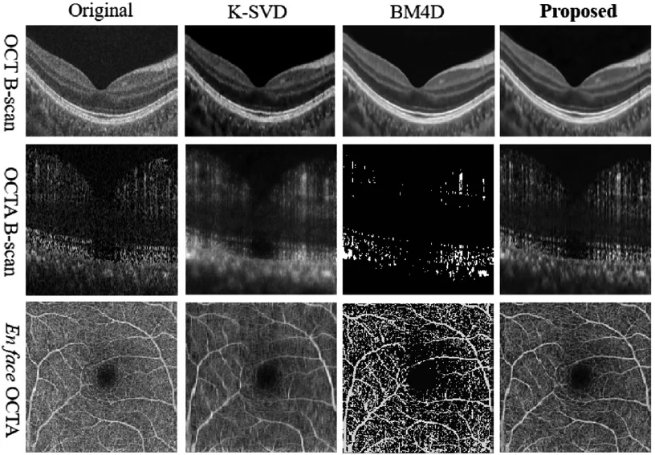
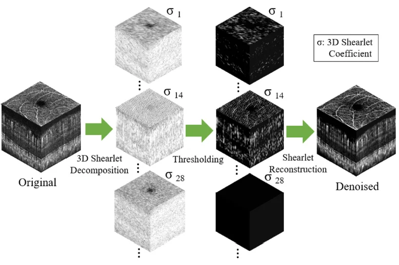
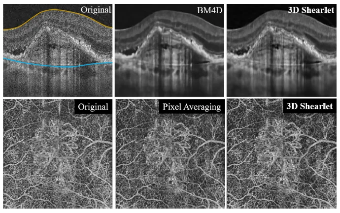

OCT是一种重要的眼科成像模态，具有非侵入式三维成像的特点，已经成为糖尿病视网膜病变、老年性黄斑病变等最常见眼底病的常规检测手段。OCTA是新兴的OCT功能成像，无需注射造影剂便可获得毛细血管形态、灌注以及血流动力学信息。近年来，OCTA已经被大量应用于眼科疾病的研究中，在检测灵敏度、准确性等方面具有显著优势，应用前景非常广阔。
然而，OCT图像中的散斑噪声与OCTA图像中的运动噪声，严重妨碍了眼底组织和血管结构的可视化，并导致难以进行定量分析。针对这一问题，已经大量的研究工作尝试去除OCT和OCTA图像中的噪声。但现有的研究都只针对其中一种有较好的效果。如下图所示，目前最为有效的OCT去噪算法BM4D和K-SVD对OCT图像效果较好，但分别会导致OCTA中毛细血管信息的丢失和模糊。

针对这一现状，近日，医学影像事业部（iMED中国团队）开发出一种能够通用于OCT和OCTA图像去噪的方法，并在两种类型图像的去噪中都取得了超越现有方法的成绩。该方法考虑到OCTA图像中的眼底血管在B扫描中与噪声形态接近，很容易与之混淆。因此提出在三维空间进行去噪，通过利用在en face平面上血管的线状结构特征与噪声相区分。该方法进一步利用到OCT和OCTA信号的稀疏性，采用三维剪切波（shearlet）进行特征变换和分解，并对噪声进行滤波，方法流程如下图所示。

由于剪切波相较于小波（wavelet）、曲线波（curvelet）等具有更强现状特征和边缘特征表示能力，该方法对于散斑噪声和运动噪声同时具有很强的消除能力。此外，由于该方法的无监督（unsupervised）特性，因此对于不同特征（正常、病灶）和不同来源的数据具有很好的鲁棒性和泛化能力。下图是针对一个老年性黄斑病变数据的OCT和OCTA去噪示例。

该项研究成果“Universal digital filtering for denoising volumetric retinal OCT and OCT angiography in 3D shearlet domain”已于2020年2月1日发表在领域权威期刊Optics Letters上（Opt. Lett. 45, 694-697 (2020) https://doi.org/10.1364/OL.383701）。